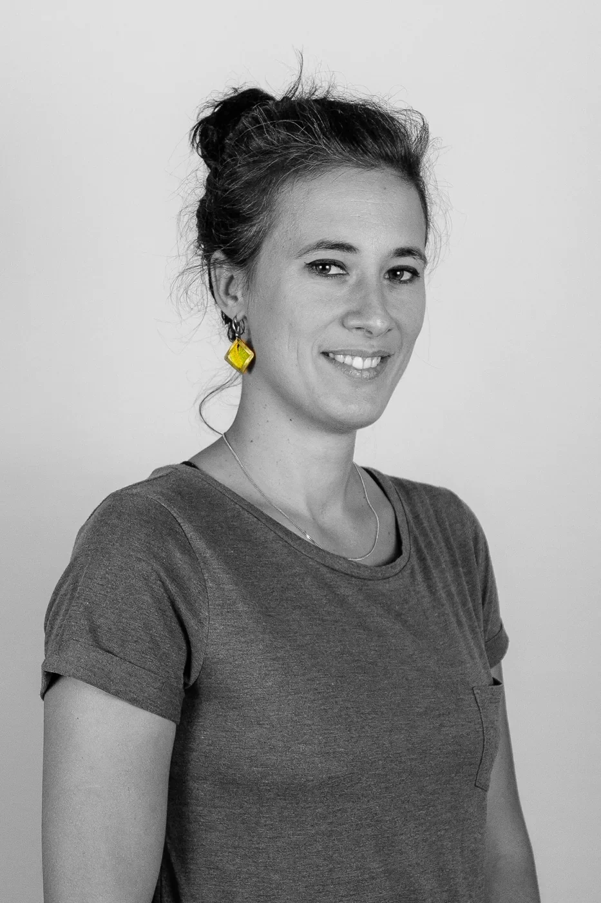

À Bagnères-de-Bigorre et en visio, j'accompagne les personnes qui souhaitent libérer leurs blocages et retrouver leur élan. Je propose également la supervision de kinésiologues dans tous les pays francophones.
La kinésiologie est une approche globale du mieux-être qui utilise le test musculaire pour identifier et libérer les déséquilibres — émotionnels, physiques, mentaux — qui freinent votre élan de vie.
Sans jugement, sans diagnostic médical, la kinésiologie vous invite à retrouver vos ressources profondes et à avancer avec plus de clarté, de légèreté et de confiance.
Libérer les mémoires émotionnelles stockées dans le corps.
Rééquilibrer les flux énergétiques pour retrouver votre ancrage.
Dépasser les blocages qui empêchent d'avancer vers vos projets.
Vous ressentez peut-être…
Le déroulement d'une séance
Nous définissons ensemble ce que vous souhaitez travailler.
Outil de dialogue avec le système nerveux pour identifier les déséquilibres.
Techniques douces (Brain Gym, TIOC, Santé par le toucher…) pour libérer les blocages.
Un temps pour accueillir les changements et repartir avec des pistes concrètes.
Vous venez de terminer votre formation ou exercez depuis quelque temps et souhaitez approfondir votre pratique, gagner en confiance et partager vos questionnements cliniques ?
Analysons ensemble vos séances, vos doutes, vos réussites. Un espace professionnel pour affiner votre regard de praticien.
Individuel ou groupe · Visio
Cabinet, tarifs, communication, posture professionnelle… Un soutien global pour démarrer sereinement votre activité.
Individuel · Visio ou présentiel 65
Sessions en petit groupe pour croiser les regards et rompre l'isolement du praticien libéral.
8 praticiens max · 2h · Visio
Quelle que soit votre école de formation — Touch for Health, TIOC, Brain Gym, SYNAPKiN, IEK ou autre — cette supervision est accessible sans appartenance requise.
Session découverte gratuite de 30 min sur demande

Aline Haelberg · Kinésiologue certifiée CFK
Bagnères-de-Bigorre (65)
[Texte de présentation à rédiger — parcours personnel, ce qui a amené Aline à la kinésiologie, sa vision de l'accompagnement…]
"[Citation personnelle d'Aline sur sa pratique et ses valeurs]"
Musicienne et violoniste au sein du groupe Zakouska, Aline porte une sensibilité artistique qui nourrit sa pratique — une attention particulière au corps, au rythme, à l'écoute de l'autre.
CFK Bordeaux & École Méditerranée — Montpellier
Kinésiologie Périnatale · Kinésiologie Harmonique · Santé par le toucher
Que ce soit pour une séance en cabinet à Bagnères-de-Bigorre ou en visio, ou pour en savoir plus sur la supervision, contactez-moi. Je réponds dans les 48h.
Je vous réponds personnellement sous 48h.